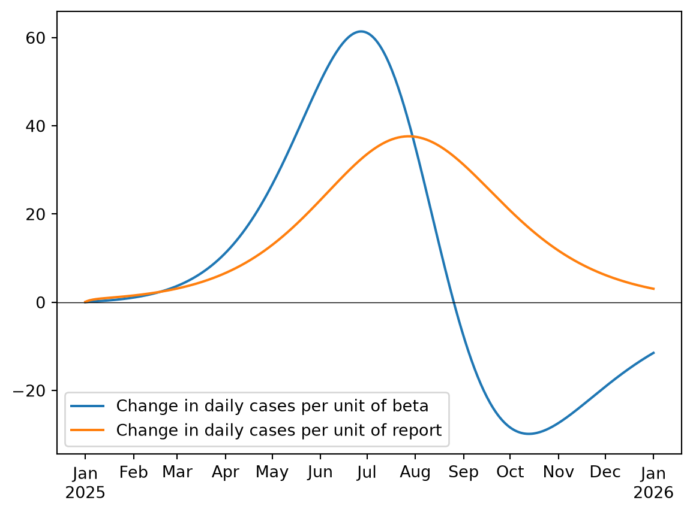
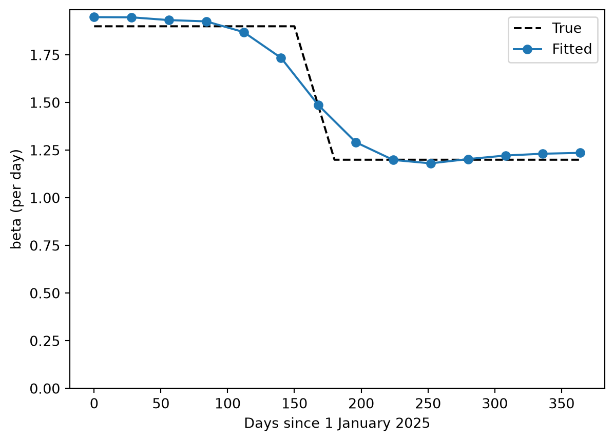
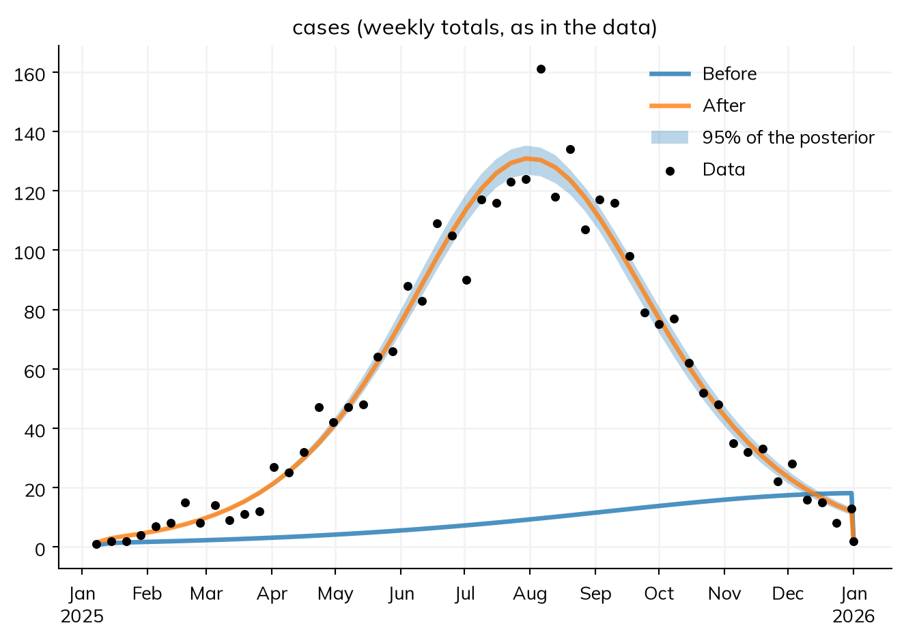

For a deterministic model, run as an ODE, Starsim can work out the gradient: how each result changes as each parameter changes. It does this by automatic differentiation with JAX, which follows the calculation of the run step by step. Gradients make it possible to fit many parameters quickly, to draw from a posterior with the No-U-Turn sampler (NUTS), and to see which parts of the epidemic a parameter affects.
This page assumes the basics of Fitting a model. Gradients need JAX (pip install "starsim[jax]") and a model whose whole run JAX can follow: a rate that calls a Python function, a module written as code, or a movement register rules this out. The fit says why when it can’t use gradients, and ss.solvers.why_not(sim, 'jax') says so for any sim (see Solvers). JAX runs on the CPU unless ss.options.jax says otherwise: for these runs, a GPU is several times slower.
The gradient of a result
The model is a measles outbreak in a town of 100,000, 90% of whom are immune, with two unknowns, the transmission rate beta and the fraction of cases reported report, and a Poisson likelihood. The data are a year of weekly cases from a run with beta = 1.9 and report = 0.5:
import numpy as npimport matplotlib.pyplot as pltimport starsim as ssS, E, I, R = ss.states('S E I R')beta = ss.par(1.5, bounds=[0.5, 4]) # Transmission rate per dayreport = ss.par(0.3, bounds=[0.05, 1]) # Fraction of cases reportedinfection = S >> E @ beta*Ionset = E >> I @ ss.days(10)recovery = I >> R @ ss.days(8)cases = ss.outcome(report*onset, likelihood=ss.poisson())measles = ss.Disease(infection, onset, recovery, cases, init=dict(I=0.0001, R=0.9))pars =dict(total_pop=100_000, start='2025-01-01', stop='2026-01-01')truth = ss.Sim(measles, pars=dict(beta=1.9, report=0.5), rand_seed=2, **pars)truth.run()data = truth.to_synthetic_data('cases', resample='week')
Sim: measles, 100,000 people, as an ODE, 2025-01-01 to 2026-01-01
measles: R0 = 15.2 (R = 1.52 at the start, with 10% susceptible), with 10 infectious at the start
Done in 0.0034 s; measles: 5,858 infections; at most 298 infectious, on 2025-08-05
sim.gradient() gives the derivative of each result, at each time, with respect to each parameter with bounds, at the parameters’ current values. Here, at the true values, for the daily reported cases:
grad = truth.gradient('cases')fig, ax = plt.subplots()t = truth.results.timevecax.plot(t, grad.beta.measles.cases, label='Change in daily cases per unit of beta')ax.plot(t, grad.report.measles.cases, label='Change in daily cases per unit of report')ax.axhline(0, color='k', lw=0.5)ax.legend();
Compiling the run with JAX, estimated time: 0.2-5 s
Compiled the run with JAX in 0.2 s
Compiling the gradient with JAX, estimated time: 0.2-5 s
Compiled the gradient with JAX in 1.2 s

The result is indexed by parameter, then module, then result: grad.beta.measles.cases is an array with one value per time step. Two parameters whose gradients have the same shape can only be fitted as a combination (see Fit diagnostics).
sim.gradient() also takes a function of the run sim that returns a number or an array, e.g. a total cost:
total =lambda sim: sim.results.measles.cases.sum()truth.gradient(total)
A parameter with a value for each level of a stratification (ss.par(ss.by(patch=[...]), bounds=...)), an array, or a time series has a gradient for each value, named as a fit names them. A time series fitted value by value is a way to estimate a transmission rate that changes in time, with no shape assumed for it. Here the data come from an outbreak whose transmission rate fell by about a third over June (as it might when schools close for the summer), and the rate is fitted as a value every four weeks, with straight lines between them:
start = ss.date(pars['start'])true_beta = ss.timeseries({'2025-01-01': 1.9, '2025-05-31': 1.9, '2025-06-30': 1.2}, 'linear') # 1.9 until the end of May, then falling to 1.2 by the end of Junedates = [start + ss.days(d) for d inrange(0, 365, 28)] # A value every four weeks, in between which it changes linearlybeta = ss.par(ss.timeseries(dates, [1.5]*len(dates), 'linear'), bounds=[0.5, 4])S, E, I, R = ss.states('S E I R')onset = E >> I @ ss.days(10)cases = ss.outcome(0.5*onset, likelihood=ss.poisson()) # The fraction reported, taken as known heremeasles_t = ss.Disease(S >> E @ beta*I, onset, I >> R @ ss.days(8), cases, init=dict(I=0.0001, R=0.9))truth_t = ss.Sim(measles_t, pars=dict(beta=true_beta), rand_seed=2, verbose=0, **pars).run()data_t = truth_t.to_synthetic_data('cases', resample='week')smooth =lambda pars: 100*np.sum(np.diff(pars['beta'].values)**2) # Large changes from one value to the next are unlikelyfit_t = ss.Sim(measles_t, data=data_t, **pars).fit(penalty=smooth, verbose=False)days =lambda times: [(ss.date(t) - start).days for t in times] # Days since the startt = np.arange(365)fig, ax = plt.subplots()ax.plot(t, np.interp(t, days(true_beta.times), true_beta.values), 'k--', label='True')ax.plot(days(fit_t.pars.beta.times), fit_t.pars.beta.values, 'o-', label='Fitted')ax.set_xlabel('Days since 1 January 2025')ax.set_ylabel('beta (per day)')ax.set_ylim(bottom=0)ax.legend();
Compiling the gradient of the log-likelihood with JAX, estimated time: 0.5-5 s
Compiled the gradient of the log-likelihood with JAX in 2.5 s

The penalty (penalty=) keeps each value close to its neighbors: a larger one gives a smoother curve that is slower to follow a change, and a smaller one a curve that follows the noise. With many values, the gradient takes one pass in reverse mode, whatever their number.
The log-density
sim.log_density() gives the log of the posterior density of the fitted parameters (the log-likelihood of the data, plus the log of the priors), as a function of their values, together with its gradient. It is what a sampler or optimizer of your own would use. Besides calling it (density(x)) and its gradient (density.grad(x)), density.fn is the function itself, to compose with JAX (jax.vmap, jax.hessian, …), and density.run(x) gives the number in each state at each time at those values:
Parameters: ['beta', 'report']
At the starting values: [1.5 0.3]
Compiling the log-density with JAX, estimated time: 0.5-5 s
Compiled the log-density with JAX in 0.3 s
Log-density: -4060.865915627085
Its gradient: [17589.42561341 8142.6806164 ]
The same log-density is what L-BFGS-B and NUTS use in a fit with a likelihood. Initial numbers, branching fractions, and inflows that depend on fitted parameters need to be linear in them; if not, building the log-density is an error that names them, and require_jax=False takes the gradients with Python in the loop instead.
Fitting with gradients
A best fit with gradients
sim.fit() uses the gradient by default ('l-bfgs-b') when a deterministic model has three or more fitted parameters; with one or two, Nelder–Mead is faster. Either can be asked for:
fit = sim.fit(method='l-bfgs-b')fit.table
Using the likelihood: the sum of the log-likelihoods of cases, treated as independent
Searching on a log scale: report
Converged: the best two of 3 searches, from points of the scan that are apart, ended within 0.1 of each other (objective values 164.4 at beta=1.901, report=0.4964; 164.4 at beta=1.901, report=0.4964; 164.4 at beta=1.901, report=0.4964; 35 evaluations)
The negative log-likelihood is 164.4 at the best values and 4060 at the initial values
par
initial
best
low
high
0
beta
1.5
1.900732
0.50
4.0
1
report
0.3
0.496393
0.05
1.0
With a likelihood for every series, this is the maximum likelihood estimate (with priors, the most probable values).
A posterior with NUTS
A posterior is the whole distribution of values consistent with the data. method='nuts' draws from it, given a likelihood for every data series, with each parameter’s prior=, or a uniform prior over its bounds:
post = sim.fit(method=ss.fitting.method('nuts', warmup=100, draws=200)) # Fewer draws than the default, to run quicklypost.summarize();
Using the likelihood: the sum of the log-likelihoods of cases, treated as independent
Searching on a log scale: report
Compiling the NUTS sampler with JAX, estimated time: 1-10 s
Compiled the NUTS sampler with JAX in 22.9 s
NUTS: 4 chains on 1 core, each of 100 warm-up draws and then 200 draws: compiled in 23.1 s, sampled in 31.5 s
Converged: R-hat at most 1.007 and effective sample size at least 381, with 0 divergent draws
The negative log-likelihood is 164.4 at the best values and 4060 at the initial values
Fitted 2 parameter(s) by nuts
Negative log-likelihood: 4060 before, 164.4 after
Converged: R-hat at most 1.007 and effective sample size at least 381, with 0 divergent draws
Posterior: 800 draws from 4 chains (best: the draw with the highest posterior density; median, lower, and upper: the median and 95% interval of the posterior)
Each chain starts near one of the best points of a scan, spends warmup= draws tuning itself (these are discarded), and then draws until the chains agree, with enough effective draws of each parameter (see Fitting methods). The table gives each parameter’s median and 95% interval, with R-hat and the effective sample size; Fit diagnostics says how to read them.
The draws themselves are in post.samples, one row for each:
This posterior is narrow because the data were made by this very ODE with Poisson noise. Real counts vary more, and real outbreaks have chance in transmission that an ODE leaves out, so a Poisson likelihood would give a posterior just as narrow, and wrong (see Fitting methods). A negative binomial likelihood with its dispersion fitted widens it to match the data, as in T6; for chance in transmission, use a stochastic model and method='pmcmc'.
Profile likelihoods
A profile likelihood gives a confidence interval for one parameter, without priors: at each value of it, the others are refitted, and the values whose negative log-likelihood is within 1.92 of the lowest form the 95% interval. A profile that stays flat up to a bound means the data don’t determine the parameter.
prof = ss.fitting.profile(sim, 'beta', values=np.linspace(1.86, 1.94, 9))print('Best value of beta:', round(prof.best, 3))print('95% confidence interval:', np.round(prof.interval, 3))prof.table
Best value of beta: 1.9
95% confidence interval: [1.889 1.912]
beta
report
nll
within
0
1.86
0.520217
187.603240
False
1
1.87
0.513876
177.648801
False
2
1.88
0.507882
170.452552
False
3
1.89
0.502189
166.041092
True
4
1.90
0.496771
164.431257
True
5
1.91
0.491638
165.630938
True
6
1.92
0.486748
169.639865
False
7
1.93
0.482060
176.450360
False
8
1.94
0.477621
186.048051
False
Without values=, ss.fitting.profile() chooses the values itself, which takes longer. Plotting the profile:
A profile needs a deterministic model whose data series all have a likelihood, and parameters without priors.
Projecting from a posterior
fit.project() runs each scenario once for each of n_runs draws from the posterior, with the same draws in every scenario, so the spread of the runs carries the uncertainty in the fitted values. Here, a catch-up campaign on 1 April, compared with none:
For a stochastic model, the runs also differ by chance (see Projecting from a posterior). post.plot() shows the fit against the data, with 95% of the posterior as a band:
post.plot()

Other samplers
For stochastic models, and models JAX can’t run, the other methods apply: 'pmcmc', 'abc-smc', and 'if2' (see Fitting methods). Starsim’s samplers can also be used directly on a log-density of your own (such as density above): ss.fitting.nuts(), ss.fitting.pmmh(), and ss.fitting.abc_smc(); see ss.fitting. A posterior can also be put together by sampling-importance resampling (SIR, not to be confused with SIR): run draws from the priors (ss.parallel(sim, priors=True, n_runs=1000)), score each with ss.fitting.loglik(run), and resample in proportion to the likelihoods; it works for any model, but needs many runs, and fails for many parameters.